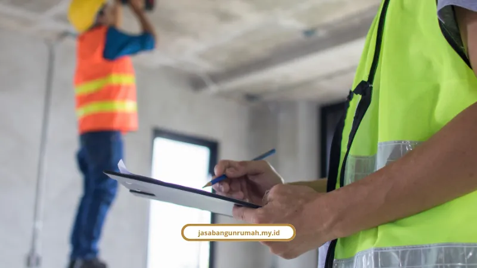

Daftar Isi
Garansi bangun rumah Jakarta yang kami berikan mencakup struktur, atap, MEP, dan finishing secara tertulis dalam kontrak kerja, bukan sekadar janji lisan yang sulit ditagih setelah rumah jadi.
Berikut standar durasi garansi yang kami terapkan dan dasar hukum yang menaunginya.
Rumah retak, atap bocor waktu musim hujan pertama, atau kontraktor yang menghilang begitu kunci diserahkan, itu ketakutan nyata yang sering kami dengar dari calon klien.
Kekhawatiran ini masuk akal, apalagi kondisi tanah Jakarta yang tidak seragam di setiap wilayah.
Mengapa Garansi Struktur Harus Tertulis dalam Kontrak?
Garansi struktur harus tertulis dalam kontrak karena janji lisan tidak punya kekuatan hukum yang bisa ditagih kalau terjadi cacat bangunan di kemudian hari.
Kontraktor yang enggan mencantumkan klausul garansi dalam SPK dan hanya memberi janji lisan semacam "tenang saja nanti dibantu" adalah tanda bahaya yang sering diabaikan calon klien.
Adizza Irania Insyra dan Noor Fatimah Mediawati, peneliti hukum konstruksi dan perlindungan konsumen dari UMSIDA, menjelaskan bahwa keseimbangan posisi hukum antara pemilik rumah dan kontraktor sangat penting dalam kontrak kerja konstruksi.
Kontrak yang tidak mencantumkan sanksi keterlambatan dan detail garansi akan membuat konsumen kehilangan perlindungan hukum saat terjadi wanprestasi atau gagal bangun.
Banyak kasus kerugian konsumen bermula dari SPK yang tidak seimbang, tanpa aturan denda keterlambatan, tanpa kejelasan prosedur perbaikan, dan klausul garansi yang dibuat ambigu sejak awal.
Apa Dasar Hukum Garansi Bangunan di Indonesia?
Dasar hukum garansi bangunan di Indonesia ada di UU No. 2 Tahun 2017 tentang Jasa Konstruksi dan PP No. 12 Tahun 2021, yang mengatur tanggung jawab kontraktor sampai 10 tahun untuk kegagalan bangunan.
Beberapa poin penting dari regulasi ini:
- UU No. 2 Tahun 2017: kontraktor bertanggung jawab atas kegagalan bangunan hingga 10 tahun, wajib melakukan perbaikan selama masa pemeliharaan, dan wajib memiliki asuransi konstruksi.
- PP No. 12 Tahun 2021: pelaku pembangunan bertanggung jawab atas pemeliharaan rumah paling singkat 3 bulan sejak Berita Acara Serah Terima (BAST) ditandatangani.
- Perpres No. 16 Tahun 2018: durasi pemeliharaan minimal 6 bulan untuk konstruksi permanen, dan mutu struktur beton bertulang wajib mengacu pada SNI 2847:2019.
Cicilia Velly, penulis spesialis ERP dan manajemen proyek konstruksi di ScaleOcean, menjelaskan bahwa masa pemeliharaan atau Defect Liability Period berfungsi sebagai jaring pengaman kualitas jangka pendek, sedangkan tanggung jawab kegagalan bangunan adalah liabilitas jangka panjang hingga 10 tahun sesuai UU No. 2 Tahun 2017.
Berapa Lama Garansi yang Wajar untuk Tiap Komponen Bangunan?
Garansi yang wajar berbeda untuk tiap komponen, mulai dari 3 bulan untuk finishing sampai 10 tahun untuk struktur utama, karena sifat kerusakan tiap elemen memang berbeda.
Berikut standar durasi yang kami acu:
- Struktur utama (pondasi, kolom, balok, pelat): 2 sampai 10 tahun, karena cacat struktur muncul lambat dan menyangkut keselamatan penghuni.
- Atap & waterproofing: minimal 1 musim hujan penuh (1-2 tahun), karena garansi 6 bulan yang jatuh di musim kemarau tidak menguji kebocoran apa pun.
- Instalasi MEP (listrik & plumbing): 1 tahun, untuk memastikan tidak ada kebocoran tertanam atau korsleting.
- Finishing & arsitektur (cat, plafon, keramik): 3 sampai 6 bulan, mencakup keramik berongga, cat mengelupas, atau retak rambut.
Ahmad Fauzi, Project Manager dan pengawas konstruksi, punya pandangan yang tegas soal ini:
"Garansi yang berguna harus menyebut tiga hal secara spesifik: apa yang dijamin, berapa lama, dan apa yang tidak termasuk. Tanpa ketiganya, garansi hanya janji lisan yang kebetulan ditulis. Khusus untuk atap, garansi 6 bulan yang jatuh di musim kemarau tidak menguji apa pun, sehingga wajib melewati minimal satu musim hujan penuh."
Jaya Priyantoko, Content Creator dan penulis bidang konstruksi dari Marifa Group, menambahkan pandangan senada:
"Ketiadaan garansi tertulis adalah red flag utama saat memilih kontraktor. Garansi struktur seperti pondasi, kolom, dan balok utama adalah bukti kepercayaan diri kontraktor terhadap mutu material dan sistem pengawasannya di lapangan."
Kalau Anda ingin memahami lebih jauh soal komponen SPK dan sistem pembayaran termin yang menyertai garansi ini, kami sudah membahasnya lengkap di artikel soal kontraktor bergaransi Jakarta yang menyoroti legalitas dan pengawasan proyek kami.
Apa Beda Uang Retensi dengan Garansi Tertulis?
Uang retensi adalah dana 5 persen dari nilai proyek yang ditahan selama 3-6 bulan pasca-BAST, sementara garansi tertulis adalah komitmen perbaikan yang tetap berlaku setelah uang retensi dicairkan.

Jadi meski uang retensi sudah dilepas ke kontraktor, kewajiban perbaikan sesuai klausul garansi di kontrak tetap mengikat sampai jangka waktu yang disepakati berakhir.
Ini yang sering disalahpahami klien, dikira begitu retensi cair, semua urusan garansi otomatis selesai. Padahal keduanya adalah dua hal yang berbeda.
Bagaimana Standar Garansi di Jasa Bangun Rumah?
Standar garansi kami mencakup garansi struktur tertulis untuk pondasi, kolom, dan balok beton bertulang sesuai SNI 2847:2019, ditambah garansi atap, MEP, dan finishing yang dituangkan langsung dalam kontrak kerja.
Beberapa hal yang membedakan pendekatan kami:
- Garansi struktur dan material dituangkan resmi dalam kontrak setelah serah terima kunci.
- RAB transparan sejak konsultasi awal, tanpa biaya tersembunyi.
- Tim arsitek dan insinyur sipil bersertifikat resmi yang mengacu standar SNI dan K3.
- Manajemen proyek terstruktur dengan laporan progres berkala berupa foto dan dokumen tertulis.
Kami sudah menyelesaikan lebih dari 250 proyek rumah tinggal, ruko, dan bangunan komersial sejak 2010, dengan tingkat kepuasan klien mencapai 98 persen dan didukung 40 lebih tim profesional.
Budi Santoso, klien rumah tinggal kami di Bekasi, menceritakan pengalamannya:
"Proses pembangunan rumah kami berjalan sangat rapi. Tim memberikan kabar perkembangan proyek secara transparan dan hasilnya jauh melebihi ekspektasi kami."
Jika proyek Anda melibatkan renovasi bangunan lama yang butuh perkuatan struktur, kami juga melayani lewat halaman jasa renovasi bangunan gedung dan jasa kontraktor bangunan kami.
Apa Ciri Kontraktor Tanpa Garansi yang Patut Diwaspadai?
Ciri kontraktor tanpa garansi yang patut diwaspadai antara lain tidak punya kantor resmi, menolak mencantumkan klausul garansi di SPK, dan menawarkan harga jauh di bawah pasaran tanpa alasan yang masuk akal.
Beberapa tanda bahaya lain yang perlu dicek:
- Hanya memberi janji lisan tanpa mau menuliskannya di kontrak.
- Tidak bisa menunjukkan legalitas usaha saat ditanya.
- Menghindari pembahasan detail masa retensi atau durasi garansi.
- Terburu-buru minta pembayaran penuh di awal proyek.
Rincian lengkap soal estimasi biaya dan komponen RAB yang harus transparan sejak awal, kami bahas tuntas di artikel biaya bangun rumah Jakarta yang mengulas simulasi rumah 2 lantai.
Cara Konsultasi Gratis
Garansi bangun rumah yang benar bukan sekadar kalimat manis di brosur, tapi klausul jelas yang tertulis di kontrak dengan durasi dan cakupan yang spesifik. Kami menerapkan standar itu untuk setiap proyek, mulai dari struktur utama sampai finishing terakhir.
Kalau Anda ingin memastikan rumah impian Anda dibangun dengan garansi tertulis yang jelas, konsultasikan gratis dan pesan survei lokasi langsung lewat WhatsApp 0889-8964-3555, atau datang ke kantor kami di Jakarta Selatan.